Sự khởi đầu
Bắt đầu lại không có nghĩa là thất bại.
Mình luôn tin rằng cảm xúc cũng có mùa riêng của nó.
Có những ngày lòng người nở hoa như mùa xuân, có những ngày phải bước đi dưới nắng gắt của mùa hạ. Rồi sẽ có lúc ta chậm lại như mùa thu, và cũng có những khoảng lặng dài như mùa đông.
Trang nhỏ này, được viết theo tinh thần của bốn mùa cảm xúc, nơi người đọc có thể ghé lại, tìm thấy một phần của mình và mang theo một chút dịu dàng trước khi rời khỏi trang.
Nhấn vào nút bên phải để ghé thăm một mùa khác. 🍂 Mỗi mùa là một khung cảnh khác nhau, hãy thử xem mùa nào khiến bạn muốn ở lại lâu nhất. ✨
Xong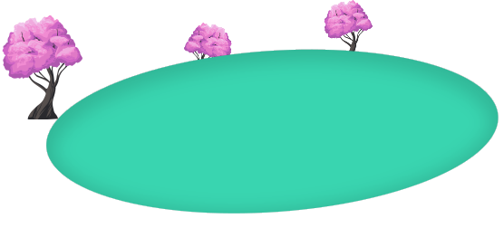
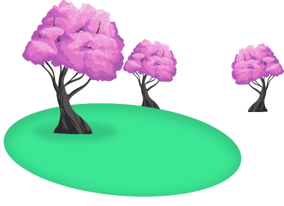
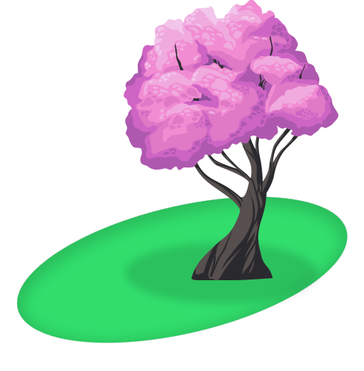
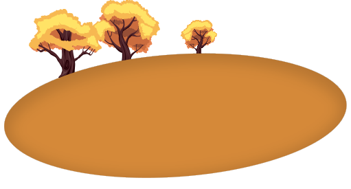
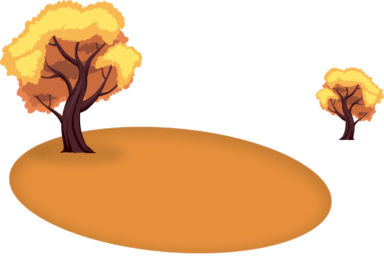
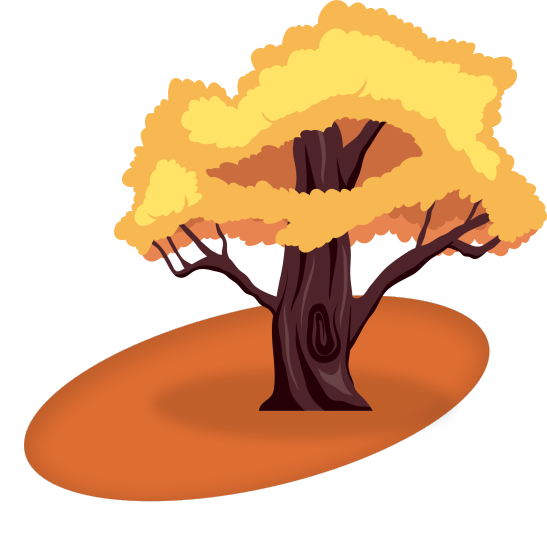
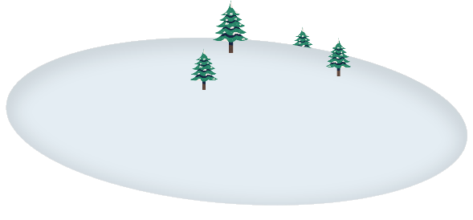
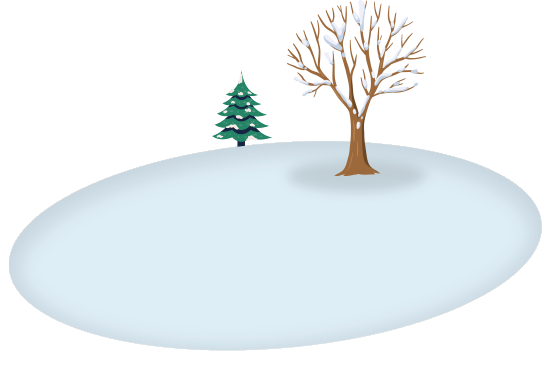
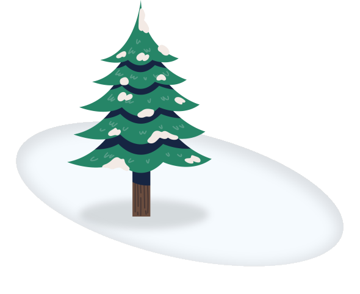


Có thể bạn vừa bước qua một cuộc chia tay, một lần thất bại, hay một khoảng thời gian dài không biết mình thuộc về đâu. Nhưng sâu bên trong, bạn vẫn còn hy vọng và mong muốn được bắt đầu lại. Có lẽ, mùa xuân bắt đầu từ đó.
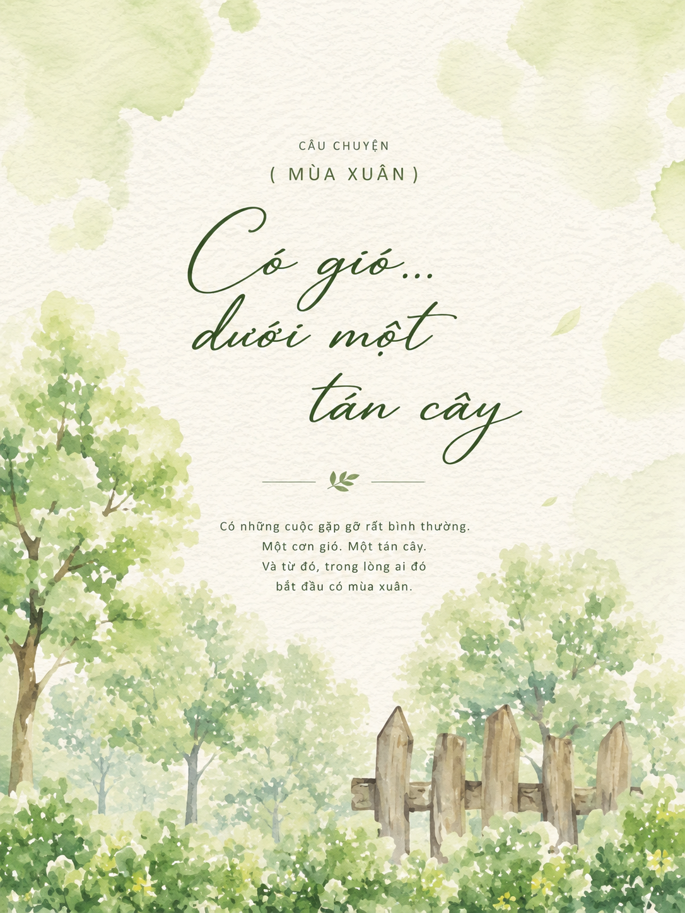
Có những điều chưa đến không phải vì chúng sẽ không
đến,
mà bởi chúng vẫn đang trên đường tìm đến em.

Những dòng nhắn nhủ dịu dàng cho ngày mới
Mùa hạ đại diện cho những nỗ lực bứt phá và khoảng thời gian ta phải đối mặt với áp lực. Phải chăng rễ cây cắm càng sâu thì tán cây mới vươn cao được.
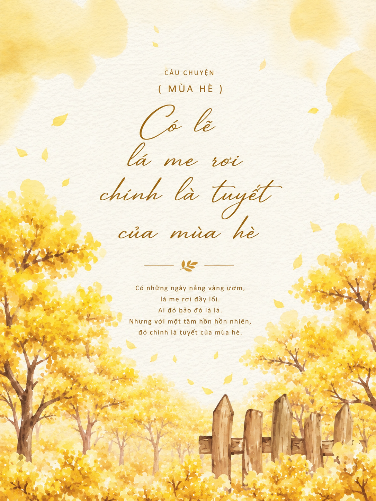
Những ngày khiến bạn muốn bỏ cuộc chính là những ngày dạy bạn bài học lớn nhất.
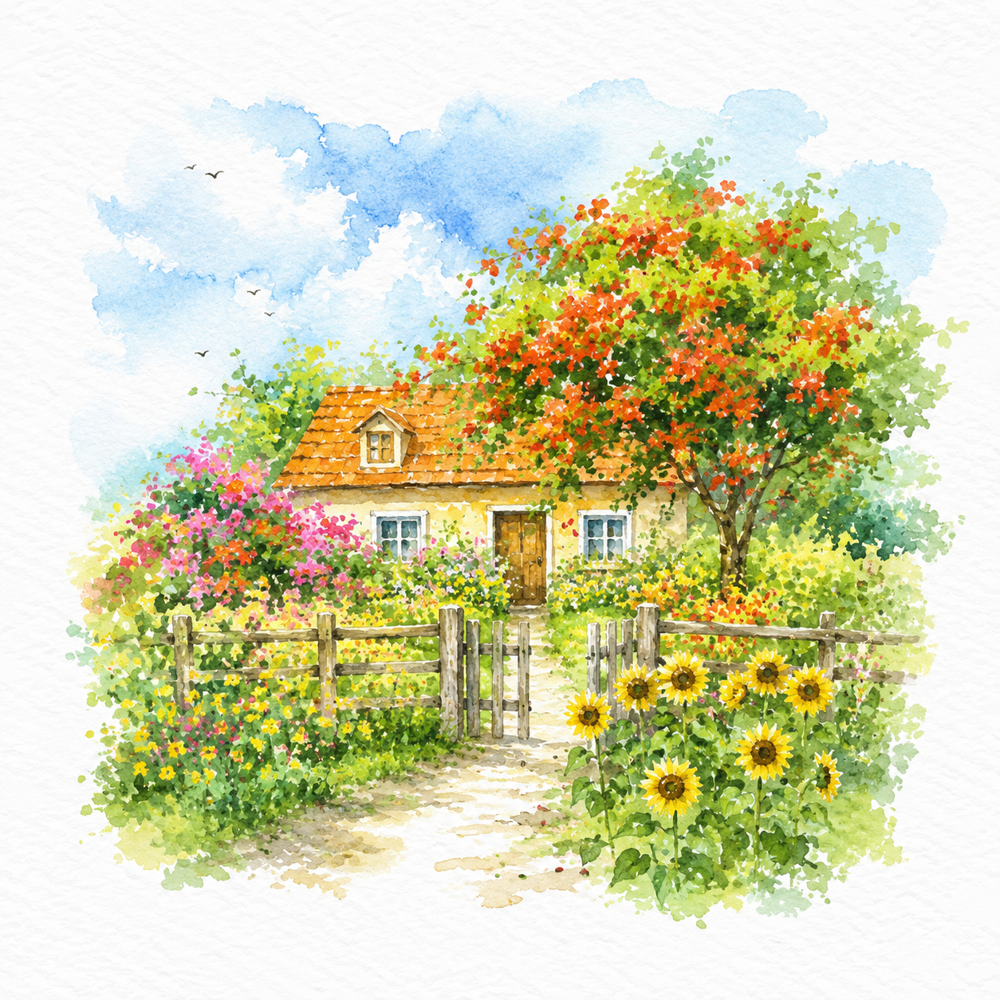
Tiếp thêm năng lượng kiên trì vượt qua ngày nắng gắt
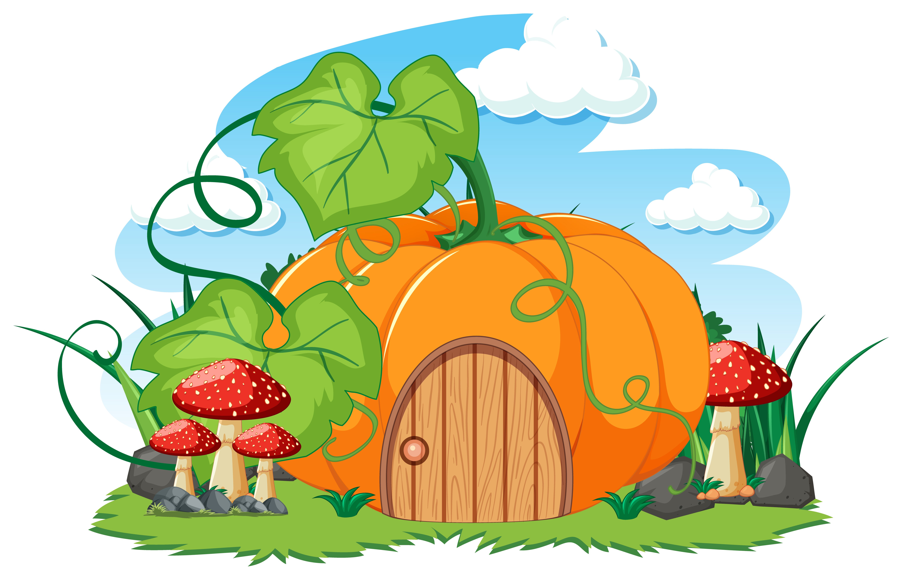
Mùa thu là mùa của lá rơi và những khoảng lặng, trưởng thành lại là khi ta nhận ra bình yên quý hơn việc cố gắng tranh luận để đúng sai.
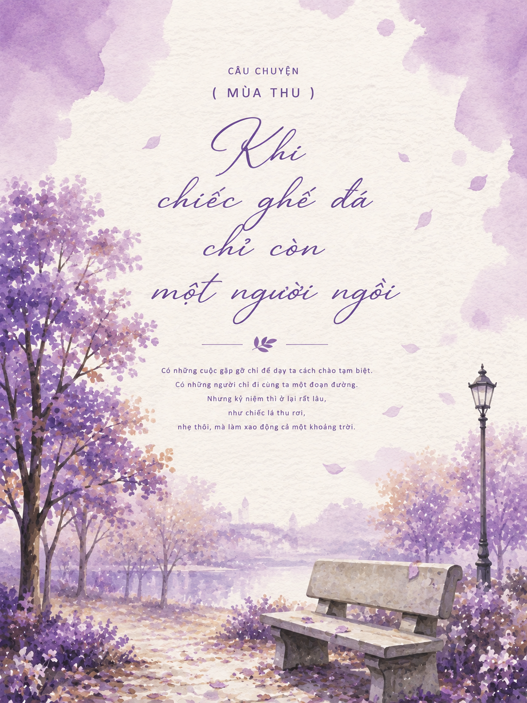
Bình yên quý giá hơn việc phải chứng minh đúng sai với thế giới.

Khoảng lặng tĩnh thản để chiêm nghiệm và bao dung
Có những ngày chỉ cần thức dậy cũng đã là sự dũng cảm. Đừng ghét phiên bản yếu đuối của mình, chính họ đã đưa bạn đi đến ngày hôm nay.
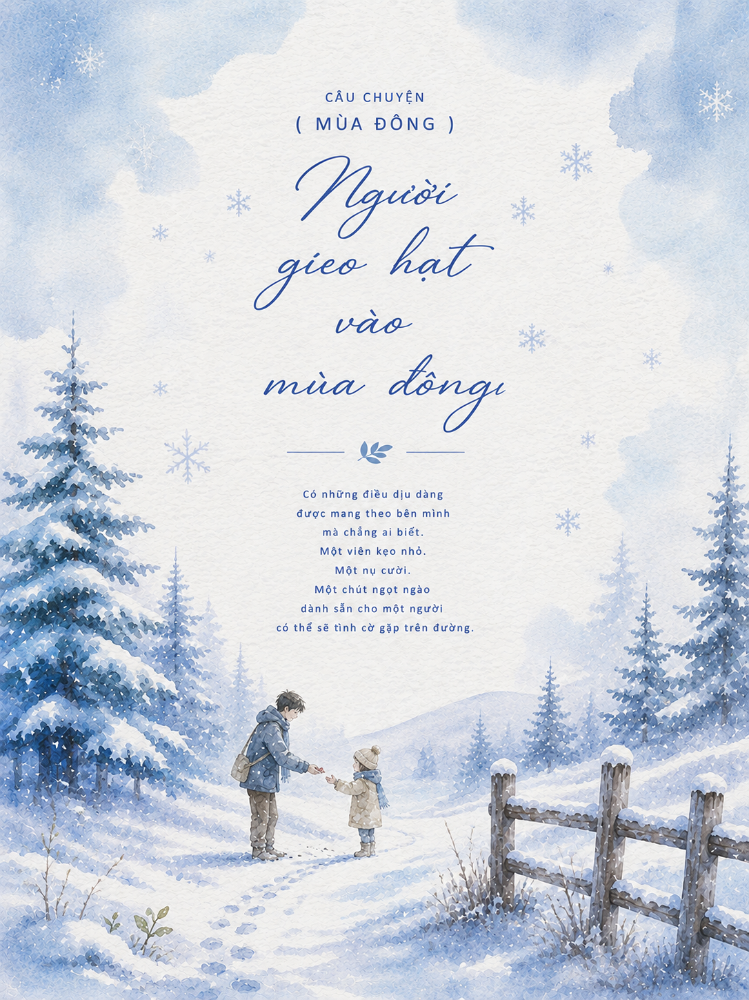
Mùa đông dài đến đâu rồi cũng sẽ có một ngày nắng trở lại. Bạn không cần phải mạnh mẽ trong mọi ngày, đôi khi, được mềm mại với chính mình cũng là một cách để bước tiếp.

Đốm lửa dịu dàng sưởi ấm những ngày tăm tối nhất